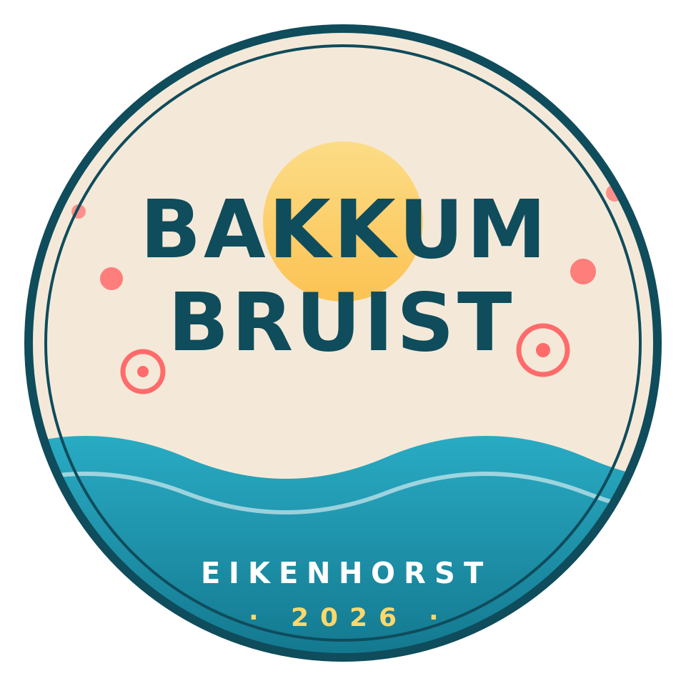

Stemming loopt, denk meeBakkum Bruist 2026
Eikenhorst
We werken aan een buurtfeest voor onze straat in september 2026. De definitieve datum prikken we samen. Denk je even mee?
Wat is het idee? ↓Wat is Bakkum Bruist?
Bakkum Bruist is een buurtinitiatief dat sinds 2016 op de tweede zaterdag van september in heel Bakkum straatfeesten organiseert, al schuiven sommige wijken de laatste jaren op naar Burendag, eind september. In de hele wijk worden tegelijk hoeken, straten en pleintjes omgetoverd tot kleine feestjes, elk met hun eigen smoel.
Voor 2026 hebben wij de organisatie voor onze straat overgenomen. De vorige organisatie is ermee gestopt en wij, een aantal van de oorspronkelijke bewoners van de Eikenhorst, nemen het stokje over. Voor ons als nieuwe organisatie is het de eerste keer, en we hebben er zin in.
Stem mee op de datum
We twijfelen tussen twee zaterdagen in september. Geef ons even een seintje welke voor jou het beste werkt, dan prikken we ’m samen.
Bedankt voor je stem! We laten via de WhatsApp-groep weten welke datum het wordt zodra alle stemmen binnen zijn.
Wat staat er op de planning
We zijn nog volop aan het brainstormen, plannen en organiseren. Wat in elk geval vaststaat:
- Gezelligheid in de straat.
- Een hapje en een drankje.
De rest kan nog alle kanten op vallen. Houd ons in de gaten voor updates.
Wanneer?
De definitieve datum prikken we samen met de straat. Er liggen twee zaterdagen op tafel: 12 september 2026 (de traditionele Bakkum Bruist-datum) of 26 september 2026 (Burendag). Stem hierboven mee ↑, dan weten we welke datum voor de meeste buren werkt.
Doe mee
We organiseren het samen met z'n vieren: Iris, Liza, Mieke en Randal. Maar Bakkum Bruist is van de hele straat: we kunnen alle ideeën, handjes en hapjes gebruiken.
De makkelijkste manier om mee te denken en op de hoogte te blijven is onze WhatsApp-bewonersgroep. Daar peilen we wensen, delen we updates en laten we weten welke datum het wordt zodra de stemmen binnen zijn.
Sluit aan bij de WhatsApp-groep
Liever een mail? Schrijf naar slems_verenigd1q@icloud.com.